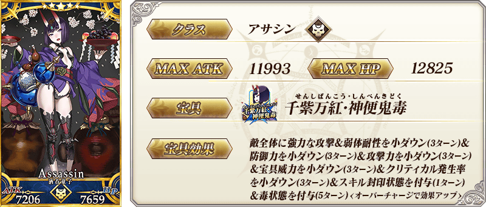
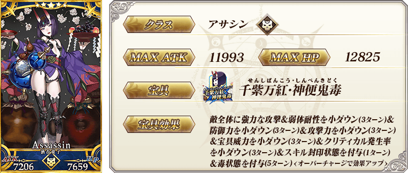
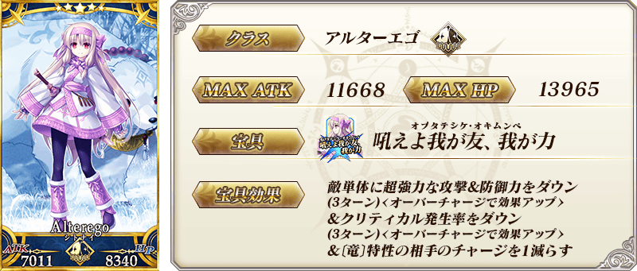
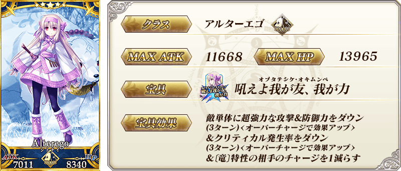
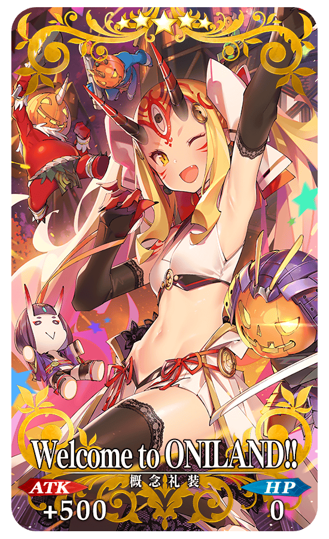
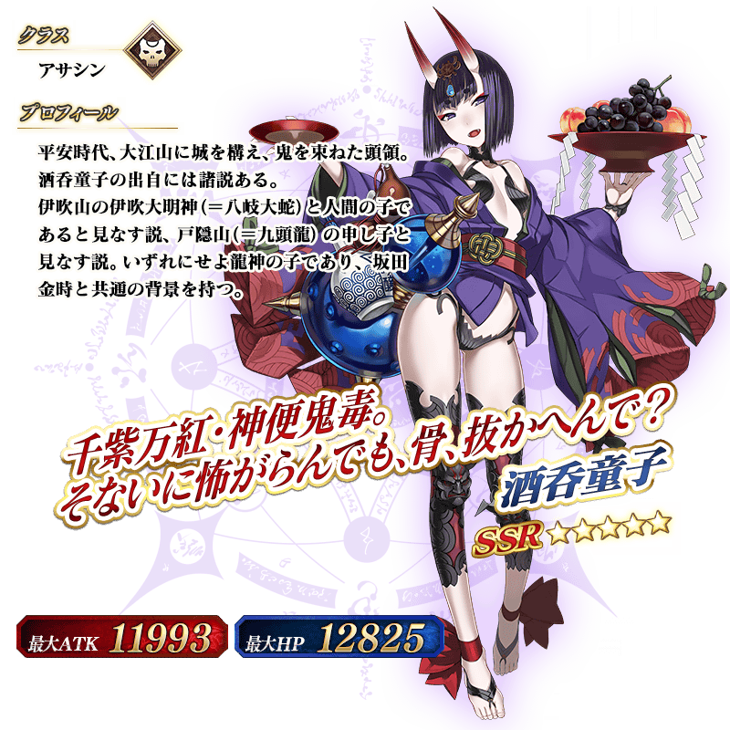
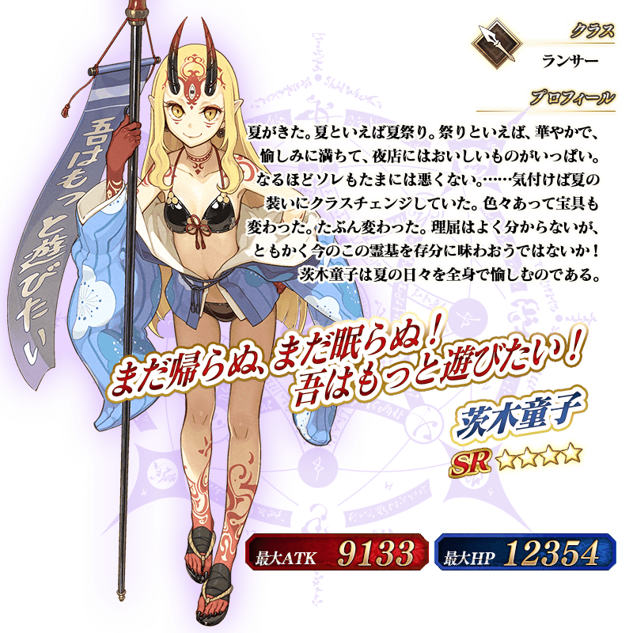

◆「復刻 萬聖節2018Pick Up召喚(每日交替)」期間◆
期間:2019年10月11日(五) 17:00～10月25日(五) 11:59
舉辦期間限定「復刻 萬聖節2018Pick Up召喚(每日交替)」！
變更在2018年舉辦的「萬聖節2018Pick Up召喚(每日交替)」一部份內容進行復刻。
※未通過第2部 第2章「Lostbelt No.2 無間冰焰世紀 諸神黃昏 不滅之火的好漢」的狀態也能進行「復刻 萬聖節2018Pick Up召喚(每日交替)」。
從有關期間限定活動「復刻:神秘之國ＯＮＩＬＡＮＤ!! ～鬼王與卡姆伊的黃金～ 輕量版」的從者之中，「★5(SSR)酒吞童子(Assassin)」「★4(SR)茨木童子(Lancer)」以期間限定登場！
本次包含上述Pick Up 4位從者！
「★5(SSR)酒吞童子(Assassin)」「★5(SSR)志度內」「★4(SR)茨木童子(Lancer)」「★4(SR)茨木童子(Berserker)」以每日交替Pick Up！
詳情請在聖晶石召喚畫面左下的召喚詳細確認。
「★5(SSR)Welcome to ONILAND!!」「★4(SR)ただ紅く」「★3(R)足柄ブラザーズ」做為期間限定概念禮裝登場！
裝備上述3種概念禮裝的話，在期間限定活動「復刻:神秘之國ＯＮＩＬＡＮＤ!! ～鬼王與卡姆伊的黃金～ 輕量版」中會提升活動道具的掉落獲得數。
◆有關從者的注意◆
※請注意「復刻 萬聖節2018Pick Up召喚(每日交替)」做為每日交替，「★5(SSR)酒吞童子(Assassin)」「★5(SSR)志度內」「★4(SR)茨木童子(Lancer)」就算Pick Up期間中也會有不被抽出的日子。
※「★5(SSR)酒吞童子(Assassin)」「★4(SR)茨木童子(Lancer)」在Pick Up期間結束後不會追加到故事召喚。
※Pick Up期間中，「★5(SSR)志度內」就算通過各章前也能入手。
※「★5(SSR)志度內」「★4(SR)茨木童子(Berserker)」在Pick Up期間結束後仍會在故事召喚被抽出。
◆有關概念禮裝的注意◆
※「★3(R)足柄ブラザーズ」在Pick Up期間中，也能靠友情點數召喚獲得。
※請注意自友情點數召喚抽出的「★3(R)足柄ブラザーズ」在自動變還設定登錄★3(R)概念禮裝的情況，會變成自動變還的對象。
Pick Up期間中，期間限定從者、Pick Up從者、期間限定概念禮裝的出現機率提升！
11次召喚中確定1張★4(SR)以上和確定1位★3(R)以上的從者！ ※確定★4(SR)以上包含從者和概念禮裝。 ※本頁面皆為開發中圖片。會有與實際圖片相異的情況。
◆「復刻 萬聖節2018Pick Up召喚(每日交替)」Pick Up內容◆
| Pick Up期間 | 每日交替Pick Up內容 | |
|---|---|---|
| ★5(SSR)從者 | ★4(SR)從者 | |
| 10/11(五) 17:00～ 10/13(日) 22:59 |
★5 酒吞童子(Assassin) ★5 志度內 |
★4 茨木童子(Lancer) ★4 茨木童子(Berserker) |
| 10/13(日) 23:00～ 10/15(二) 22:59 |
★5 志度內 | ★4 茨木童子(Lancer) |
| 10/15(二) 23:00～ 10/17(四) 22:59 |
★5 志度內 | ★4 茨木童子(Berserker) |
|
10/17(四) 23:00～ 10/19(六) 22:59 |
★5 酒吞童子(Assassin) | ★4 茨木童子(Lancer) |
|
10/19(六) 23:00～ 10/21(一) 22:59 |
★5 酒吞童子(Assassin) | ★4 茨木童子(Berserker) |
|
10/21(一) 23:00～ 10/25(五) 11:59 |
★5 酒吞童子(Assassin) ★5 志度內 |
★4 茨木童子(Lancer) ★4 茨木童子(Berserker) |
※請注意會以每日交替變更Pick Up的從者。

 
※上述「★5(SSR)酒吞童子(Assassin)」的卡面為靈基再臨第2階段。

※上述「★5(SSR)酒吞童子(Assassin)」的卡面為靈基再臨第2階段。


 
※上述「★5(SSR)志度內」的卡面為靈基再臨第2階段。

※上述「★5(SSR)志度內」的卡面為靈基再臨第2階段。

 ※上述「★4(SR)茨木童子(Berserker)」的卡面為靈基再臨第2階段。
※上述「★4(SR)茨木童子(Berserker)」的卡面為靈基再臨第2階段。

|  |
★★★★★SSR
|


|
★★★★SR |

|
★★★R |
 ※上述「★5(SSR)酒吞童子(Assassin)」的立繪為靈基再臨第2階段。

 ※上述「★5(SSR)志度內」的立繪為靈基再臨第2階段。
※上述「★5(SSR)志度內」的立繪為靈基再臨第2階段。


介紹「★5(SSR)酒吞童子(Assassin)」「★5(SSR)志度內」「★4(SR)茨木童子(Lancer)」「★4(SR)茨木童子(Berserker)」的寶具演出！
在「Fate/Grand Order」官方網站內的公告中，以影片公開寶具演出，敬請確認。
其他還有，期間限定活動「復刻:神秘之國ＯＮＩＬＡＮＤ!! ～鬼王與卡姆伊的黃金～ 輕量版」同時舉辦！
關於詳情，請自下述橫幅確認。
■「復刻:神秘之國ＯＮＩＬＡＮＤ!! ～鬼王與卡姆伊的黃金～ 輕量版」詳細情報